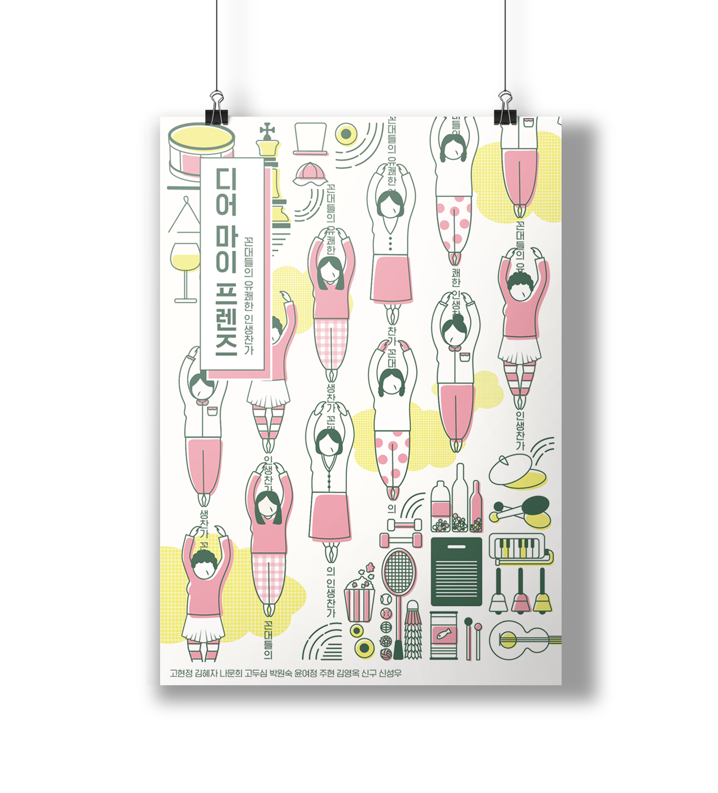

디어 마이 프렌즈

2018년 (2D 포스터 디자인)
jtbc 드라마, ‘디어 마이 프렌즈’ 포스터의 리디자인이다.
이 드라마는 "끝나지 않았다. 여전히 살아있다"고 외치는 황혼 청춘들의 인생 찬가를 그린 작품으로, 굉장히 인상깊어 작업을 하게 되었다.
‘꼰대들의 유쾌한 인생 찬가’를 작품의 주제 문장으로 설정하여 주인공들의 밝고 명랑한 분위기를 표현했다.
2018년 (2D 포스터 디자인)
jtbc 드라마, ‘디어 마이 프렌즈’ 포스터의 리디자인이다.
이 드라마는 "끝나지 않았다. 여전히 살아있다"고 외치는 황혼 청춘들의 인생 찬가를 그린 작품으로, 굉장히 인상깊어 작업을 하게 되었다.
‘꼰대들의 유쾌한 인생 찬가’를 작품의 주제 문장으로 설정하여 주인공들의 밝고 명랑한 분위기를 표현했다.